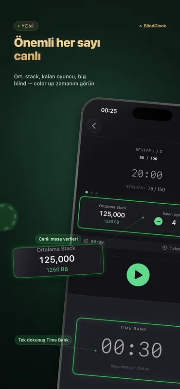
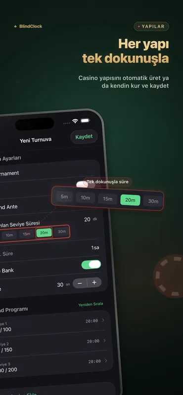
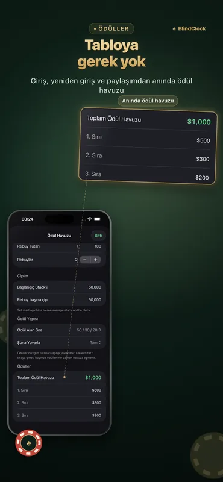

Bir ev sahibinin ihtiyacı olan her şey
Ev oyunları ve kulüp turnuvaları için tasarlandı — ekran kapalıyken bile hassas, masanın öbür ucundan bile okunaklı.
Hassas turnuva sayacı
Seviyeleri duraklatın, sürdürün veya atlayın. Saat arka planda hassasiyetini korur ve uygulama zorla kapatılsa bile çalışmaya devam eder — kaldığınız yerden tam olarak devam edin.
Blind yapısı üretici
Oyuncu sayınızı, çiplerinizi ve hedef süreyi girin — tek dokunuşla, molaları da içeren, temiz ve kumarhane tarzı bir yapı elde edin.
Ödül hesaplayıcı
Buy-in, rebuy ve ödül dağılımları anında hesaplanır — gece sonunda hesabı bir tabloya gerek kalmadan kapatın.
Time bank
Yapılandırılabilir time bank'lerle oyunculara ek karar süresi verin; uyarılar ve seslerle eksiksiz.
Live Activity & Dynamic Island
Mevcut seviye Kilit Ekranınızda ve Dynamic Island'da görünür. Şarjdaki bir iPhone'da StandBy bunu tam ekran bir turnuva saatine dönüştürür.
iPad masa ekranı
İki yanında blind bilgileriyle dev bir geri sayım için iPad'i yatay konuma çevirin — tüm masa bir bakışta okur ve ekran açık kalır.
Şablon paylaşımı
Herhangi bir turnuvayı bir .blindclock dosyası olarak dışa aktarın ve AirDrop ile bir arkadaşınıza gönderin — tam olarak aynı yapıyı tek dokunuşla içe aktarır.
iCloud senkronizasyonu
Turnuva şablonlarınız iPhone ve iPad arasında otomatik olarak sizinle gelir — herkes için ücretsiz.
Uygulamayı iş başında görün



Örnek blind yapıları
Düzgün bir yapı şöyle görünür: turbo yaklaşık 1,5 saatte, standart bir ev oyunu yaklaşık 3 saatte, deep stack 4,5 saat veya daha uzun sürede biter. BlindClock'un üreticisi tam oyuncu sayınıza, çiplerinize ve hedef sürenize göre bir yapıyı tek dokunuşla kurar.
| Seviye | Turbo · 15 dk | Standart · 20 dk | Deep stack · 30 dk |
|---|---|---|---|
| 1 | 25 / 50 | 25 / 50 | 25 / 50 |
| 2 | 50 / 100 | 50 / 100 | 50 / 100 |
| 3 | 100 / 200 | 75 / 150 | 75 / 150 |
| 4 | 200 / 400 | 100 / 200 | 100 / 200 |
| 5 | 300 / 600 | 150 / 300 | 150 / 300 |
| 6 | 500 / 1000 | 200 / 400 | 200 / 400 |
| 7 | — | 300 / 600 | 250 / 500 |
| 8 | — | 400 / 800 | 300 / 600 |
| 9 | — | 500 / 1000 | 400 / 800 |
| Başlangıç stack'i | 5,000 | 5,000 | 10,000 |
Blindler small blind / big blind olarak gösterilir. Her dört–beş seviyede bir 10 dakikalık mola ekleyin — BlindClock'un üreticisi molaları otomatik yerleştirir.
Ayrıntılı rehber (İngilizce): evde poker turnuvası nasıl düzenlenir →
2.1’deki yenilikler
- Canlı masa istatistikleri — ortalama stack, kalan oyuncu ve büyük blind cinsinden ortalama stack, her seviyede güncellenir — doğrudan saat ekranında.
- Color up zamanını görün — ciddi organizatörlerin izlediği sayı: ne zaman color up yapılacağı, ne zaman deal konuşulacağı, turnuvanın gerçekte hangi tempoda ilerlediği. Bir oyuncuyu elemek için dokunun. Herkese ücretsiz.
- Daha hızlı açılış ve rötuşlar — yenilenmiş bir açılış ekranı ve uygulama genelinde rötuşlar.
BlindClock Pro
Ücretsiz sürüm tamamen oynanabilir — sayaç, Live Activity, üretici, ödül dağılımı, senkronizasyon ve 5'e kadar özel turnuva. Pro, tek bir satın almayla sınırı sonsuza dek, tüm cihazlarınızda kaldırır.
- Sınırsız özel turnuva
- Tek seferlik satın alma
- Reklam yok, abonelik yok
- Tüm cihazlarınızda